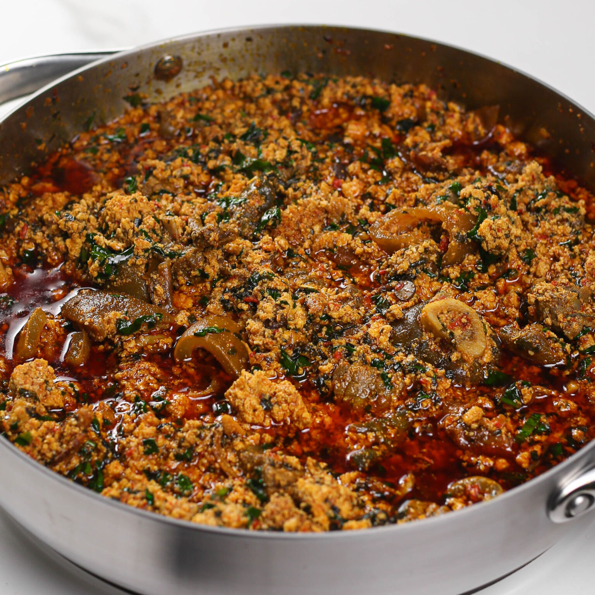

Home
Egusi-Soup

Description
Egusi soup is a thick, protein-dense soup made from the sun-dried and
ground seeds of certain cucurbitaceous plants (like melons or gourds).
It is characterized by its vibrant orange-yellow color from palm oil and
its distinctive lumpy, curd-like texture . The flavor is deeply
savory, umami-rich from the addition of fermented locust beans (Iru) and
smoked fish, and it is usually packed with assorted meats and leafy
greens like spinach or bitter leaf
Ingredients
-
The Stars: "2 cups Ground Egusi (Melon seeds), 1/2
cup Palm Oil"
-
Vegetables: "Chopped Spinach (Efo Shoko or Tete),
Pumpkin leaves (Ugu), or Bitter leaf"
-
Proteins: "Assorted meats (Beef, Shaki, Goat meat),
Stockfish, Smoked Catfish"
-
Aromatics: "2 tbsp Ground Crayfish, 1 tbsp Iru
(Locust beans), 1 large Onion"
-
The Base: "Blended Pepper mix (Scotch bonnet, Red
bell pepper, and Onions)"
-
seasoning: "Meat stock, Seasoning cubes, and Salt to
taste
Steps
-
Prep the Proteins: Boil your assorted meats and stockfish with onions,
seasoning cubes, and salt until very tender. Save the meat stock! This
is the soul of the soup.
-
Make the Egusi Paste: In a small bowl, mix the ground egusi with a
little bit of water or meat stock to create a thick, dough-like paste.
Set this aside
-
The Frying Phase: Heat palm oil in a pot for about 2 minutes (don't
bleach it). Add the diced onions and half of the Iru. Fry for a
minute, then pour in the blended pepper mix. Fry until the water
evaporates and the oil starts to bubble on top.
-
Form the Lumps: Using a spoon, scoop small balls of the egusi paste
into the frying pepper mix. Do not stir. Cover the pot and let it
steam on low heat for 5–8 minutes. This allows the egusi to "cake"
into those desirable lumps.
-
Simmer: Gently add the cooked meats, stockfish, and the saved meat
stock. Add the crayfish and the remaining Iru. Stir very gently so you
don't break the egusi lumps too much. Let it simmer for 10 minutes.
-
Add Greens: Add your chopped vegetables (Spinach or Ugu). Stir and let
it simmer for just 2–3 minutes—you want the veggies to stay bright and
fresh.
-
Final Touch: Taste for salt and seasoning. Once the oil has settled on
the top, your Egusi soup is ready.